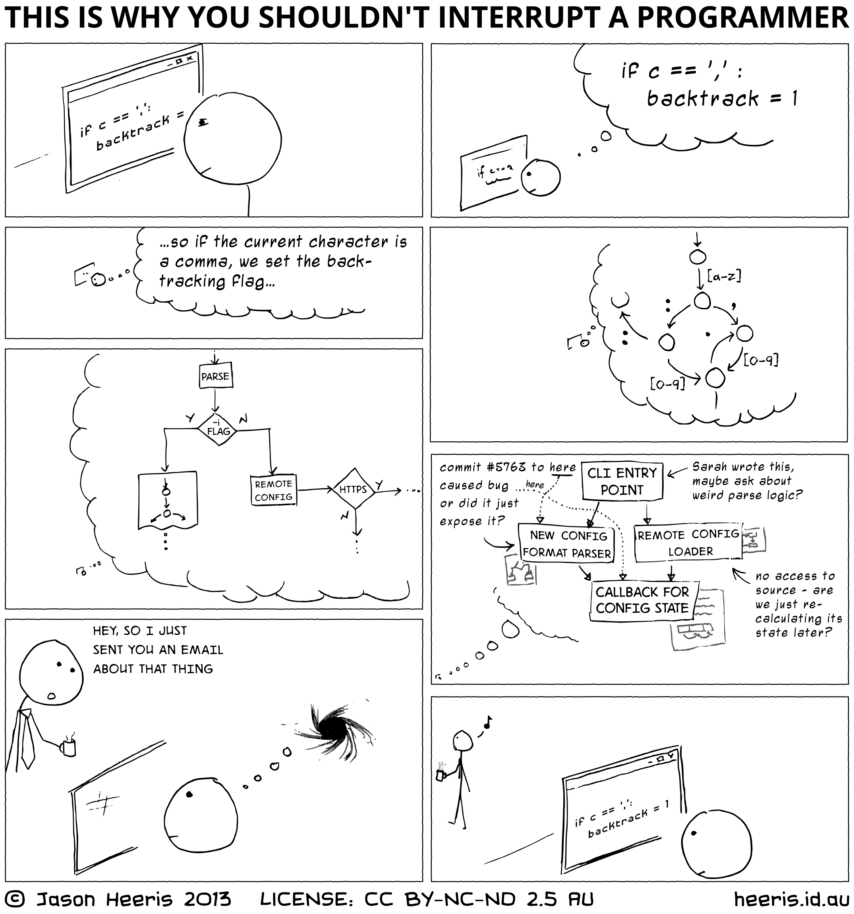

Ruby Monstas
Learning to program
Learning strategies
People have different ways of learning
Listening to lectures
Reading books/slides
Programming by themselves/in groups
Solving exercises
Find your own way!
Programming languages
...are a bit like natural languages
They have a syntax and vocabulary!
You tell to the computer what you want it to do
But the computer is very strict in its interpretation of what you're saying!
Lots of practise will make you fluent in "speaking" the language
Some general hints
Some general hints
Focus when you learn, get rid of distractions
Write your own notes about the lectures/exercises
Try to bring in your own ideas, build on top of the exercises
Try to make your own small projects
Learning to program
Error messages are your friends
Don't be afraid to google: Use "ruby" in your search
Divide and conquer: Start with the smallest possible step and make sure it works before you move on
Additional Resources
What questions do you have?